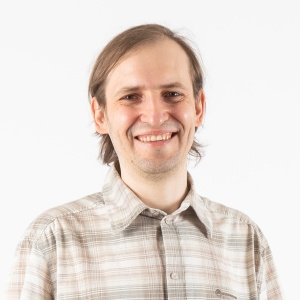

My CV
 |
Maxim Mozgovoy |
Research Interests
Machine learning, human-like game AI, computer games.
Computer-assisted language learning, natural language processing.
Career
From 2016. Co-founder and technical director, Helium9 Games (Czech Republic)
From 2009. Associate professor, The University of Aizu (Japan)
2006-2007. Senior software engineer, TruSoft Int’l Inc. (USA)
2004-2005. Researcher, University of Joensuu (Finland)
2001-2002. Consulting programmer, Prirost Co Ltd (St. Petersburg, Russia)
1998-2000. C/C++ teacher and programmer, North Ossetian State University (Russia)
Spoken Languages
Russian (native)
English (fluent)
Finnish (in progress)
Japanese (in progress)
Current Teaching (The University of Aizu)
From 2018. Introduction to Data Management
From 2018. Integrated Exercise for Software II (Exercises)
From 2012. Software Engineering for Internet Applications
From 2010. Concurrent and Distributed Computing
Past Teaching
2010-2017. Web Programming (Exercises), The University of Aizu
2010-2017. Database Management Systems (Exercises), The University of Aizu
2014. Object-Oriented Programming in C++ (Invited Lectures), Northern (Arctic) Federal University
2012. Thesis Writing, The University of Aizu
2012-2013. Bioinformatics Algorithms, The University of Aizu
2012. Theory of Computing (Invited Lectures), North Ossetian State University
2004-2005. Theoretical Foundations of CS (Theory of Computing), University of Eastern Finland
2004. Data Mining and Plagiarism Detection (Invited Lectures), St. Petersburg State University
1998-2000. Basics of C++ Programming, North Ossetian State University
Education
2002-2007. University of Joensuu, MSc (2004) and PhD (2007), Computer Science
2000-2006. St. Petersburg State University, MSc (2003) and PhD (2006), Mathematics
1998-2000. North Ossetian State University
1988-1998. Secondary school #39, Vladikavkaz
Graduation Works
(PhD thesis) Enhancing Computer-Aided Plagiarism Detection. University of Joensuu, 2007.
(PhD thesis) Machine semantic analysis of the Russian language and its applications (in Russian). St. Petersburg State University, 2006.
(MSc thesis) Concurrent Program Verifier — a Tool for Teaching Concurrent Programming. University of Joensuu, 2004.
(MSc thesis) Informational Retrieval: Finding and Utilizing Semantic Relations in Sentences (in Russian). St. Petersburg State University, 2003.